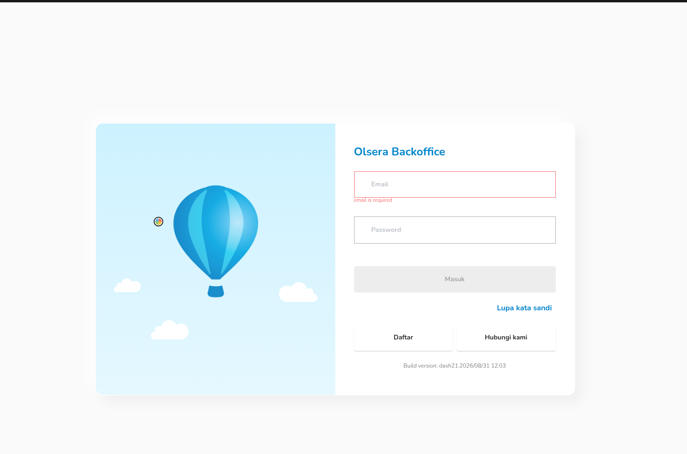
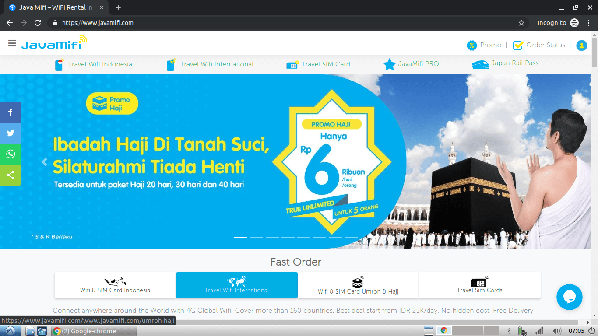
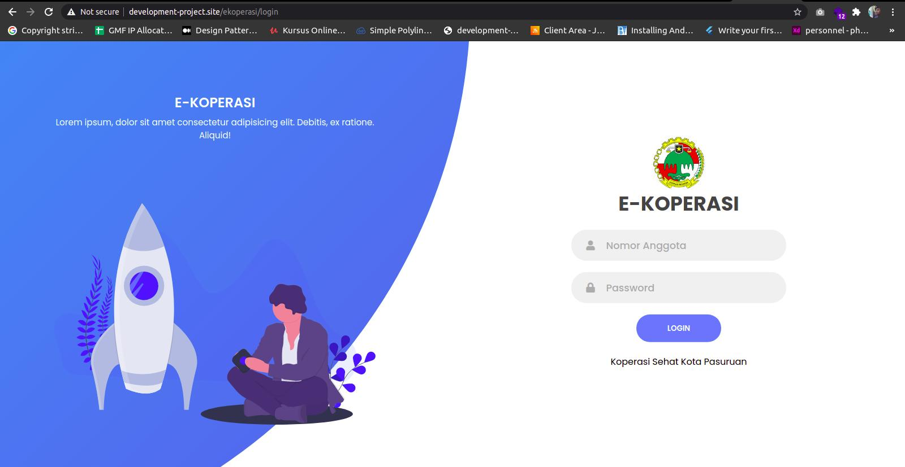
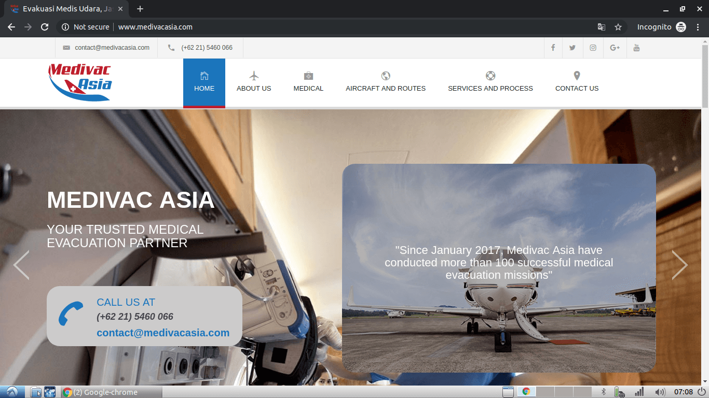
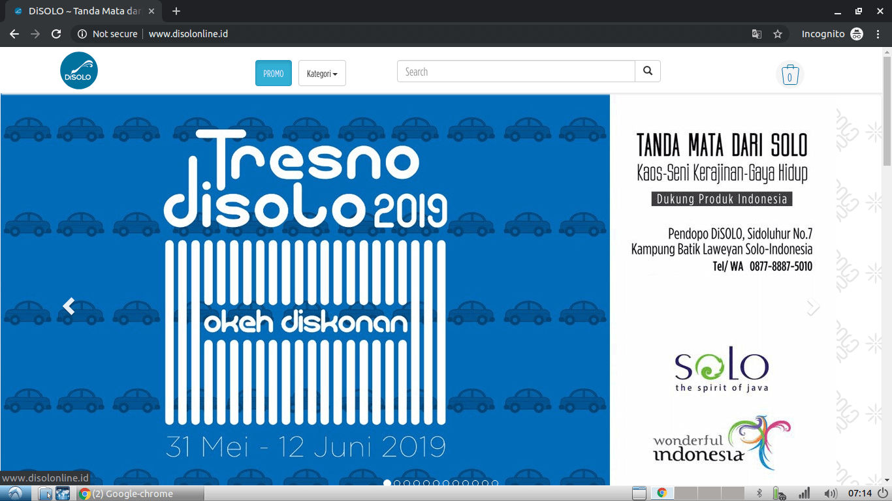
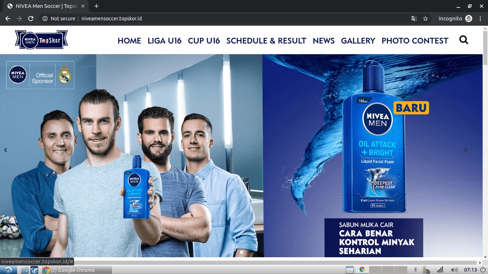

01Open caseOmnichannel / Marketplace
Recent01 Fullstack & Backend Developer / Indonesia
Reliable systems · Thoughtful digital products
I build reliable, maintainable digital products with a focus on backend systems, integrations, and seamless user experiences — from the first interaction to the final request.
ExploreSYSTEMS / 001
Useful by design
02 Selected professional work
2017 — 2024
Backend / Fullstack
A selection of professional work across commerce, government services, media, content platforms, and business operations.

01Open case
02Open case
03Open case
04Open case
06Open case
05Open caseRilis ID · Watyutink · Detik Brandstudio
and more digital platforms.
Professional profile
I am Fadilatur Rokhman, a Fullstack and Backend Developer with more than four years of professional experience. I specialize in developing reliable web applications, business platforms, CMS solutions, transaction systems, and service integrations. I am motivated by continuous learning and open to opportunities where I can create measurable value for a forward-thinking team.